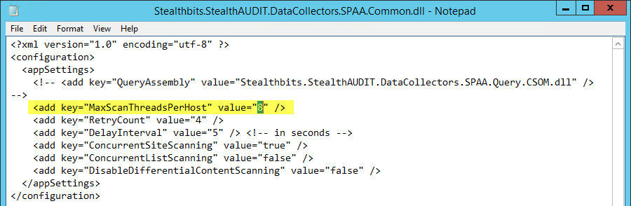

Summary: SharePoint Online scans are being throttled by Microsoft, as a result we have enhanced SPAA to use 'exponential back-off' to avoid SharePoint Online throttling.
Issue:
Title: SharePoint scans are being throttled by Microsoft - Error 429, Error
503
Summary: SharePoint Online scans are being throttled
by Microsoft, as a result we have enhanced SPAA to use 'exponential back-off' to
avoid SharePoint Online throttling.
Before Fix: SPO scans will be throttled if you send a lot of requests at
once.
After fix: SPAA can recognize that a throttle is going to be hit and leverage the
exponential backoff technique to avoid hitting a throttle.
Submitted by:
Christopher Nieves
Affected Versions:
9.0
Affected Module:
SA - DC - SPAA
Dev Ticket:
- SAFS-16792
- SPAA build 9.0.0.822
Hotfix
YouTrack/Escalations
- SAFS-16792
Customers
- Thorogood, Fairfax County Government, NY Jets
Comments:
In the logs look for error codes 429, 500 and/or 503 - these will appear first followed by 401 errors due to our session being blocked completely via the throttle mechanism. In the event that we are still being throttled after updating the customer's build then you should reduce the thread allocation on the job.
To do this navigate to the PrivateAssemblies folder and open up the Stealthbits.StealthAUDIT.DataCollectors.SPAA.Common.dll file and change the "MaxScanThreadsPerHost" setting to a lower number. By default this is set to 8, I would recommend trying 6 or 4 threads in the event of further throttling.

Instructions:
- Unblock the hotfix zip file in the windows property dialog, if an unblock button exists there.
- Close all instances of StealthAUDIT (check task manager under processes for all users)
- Update all DC files in your %SAInstallDir%DC folder
- Update all PrivateAssemblies in your %SAInstallDir%PrivateAssemblies folder.
- Update all Agent files in your %SAInstallDir%Agent folder
Instructions: Instructions:
- Unblock the hotfix zip file in the windows property dialog, if an unblock button exists there.
- Close all instances of StealthAUDIT (check task manager under processes for all users)
- Update all DC files in your %SAInstallDir%DC folder
- Update all PrivateAssemblies in your %SAInstallDir%PrivateAssemblies folder.
- Update all Agent files in your %SAInstallDir%Agent folder
Product:
StealthAUDIT
Module: SA
- DC - SPAA - Activity;SA - DC - SPAA - Permissions;SA - DC - SPAA - Sensitive Data
Versions:
9.0
Dev Ticket:
SAFS-16792
Resolved In:
SPAA build 9.0.0.822
Salesforce Article ID:
2552